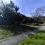
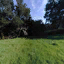
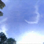
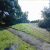
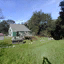

Options:
Bubble Options?
Iridescence Texture?
Noise Texture?
Modulation Texture?
Environment Map?
Background Color (0-255, rgb):
Controls:
Drag to rotate. Mousewheel to zoom. 'q' to exit all options.
Loading...
close
close
close
close
    
Using environment map:
On. Turn off?
close
#ifdef GL_ES precision highp float; #endif attribute vec3 position; attribute vec3 normal; attribute vec2 texCoord0; attribute float texCoord1; varying vec4 v_position; varying vec2 v_uv; varying vec2 v_params; varying vec3 v_reflected; uniform mat4 worldViewProjection; uniform mat4 world; uniform mat4 worldInverseTranspose; uniform vec3 eye; uniform vec4 thickness_params; uniform float timer; uniform float bubbleNumber; uniform float distortion; void main() { vec4 object_position = vec4(position.xyz, 1); vec4 object_normal = vec4(normal.xyz, 0); // texCoord1 is the sampled value from the modulation texture. float modulation_factor = sin(timer + bubbleNumber) * (distortion * texCoord1); vec4 unit_normal = normalize(object_normal); object_position.xyz += unit_normal.xyz * modulation_factor; vec3 tmp_normal = normalize((worldInverseTranspose * object_normal).xyz); vec4 tmp_position = world * object_position; vec4 center = world * vec4(0, 0, 0, 1); vec3 eye_vector = normalize(tmp_position.xyz - eye); // Absolute value for the back faces. float cos_i = abs(dot(tmp_normal, eye_vector)); float thickness = exp(-(tmp_position.y - center.y) * thickness_params.x) * thickness_params.y / 2.0; gl_Position = worldViewProjection * object_position; v_position = world * object_position; v_uv = texCoord0; v_params = vec2(cos_i, thickness); v_reflected = reflect(eye_vector, tmp_normal); } // #o3d SplitMarker #ifdef GL_ES precision highp float; #endif uniform sampler2D noise_sampler; uniform sampler2D iridescence_sampler; uniform samplerCube env_sampler; uniform vec4 thickness_params; uniform bool useCubeMap; uniform bool blendTwice; varying vec4 v_position; varying vec2 v_uv; varying vec2 v_params; varying vec3 v_reflected; void main() { // Noise: remap [0.. 1] to [-0.5, -.5] float noise = (texture2D(noise_sampler, v_uv).x - 0.5); float thickness = v_params.y - noise * thickness_params.z; float cos_i = v_params.x; // Modulate iridescence color by the environment looked up along the // reflected ray. vec4 color = texture2D(iridescence_sampler, vec2(cos_i, thickness)); if (useCubeMap) { color.xyz *= textureCube(env_sampler, v_reflected).xyz; } // Modulate by per-face attenuation color.rgb *= thickness_params.w; if (blendTwice) { // Apply color effect a second time for more vibrant, visible bubbles. color.rgb = color.rgb * (1.0 + color.a); color.a *= color.a; } gl_FragColor = color; }